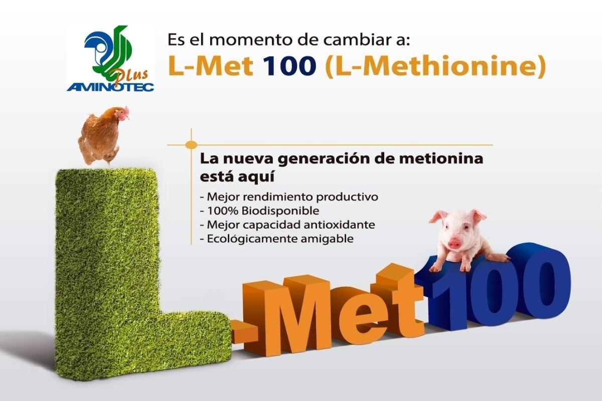
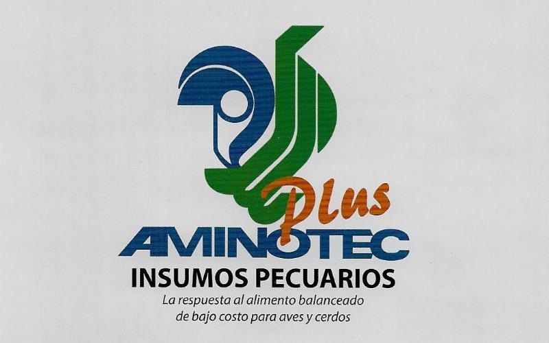
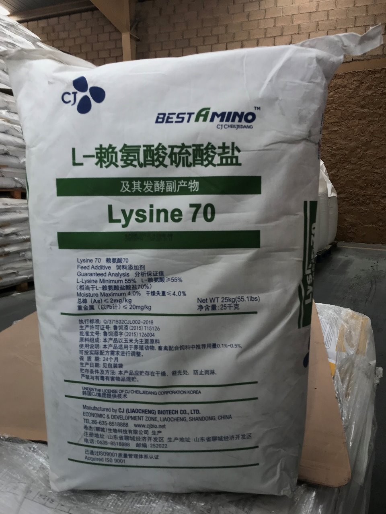
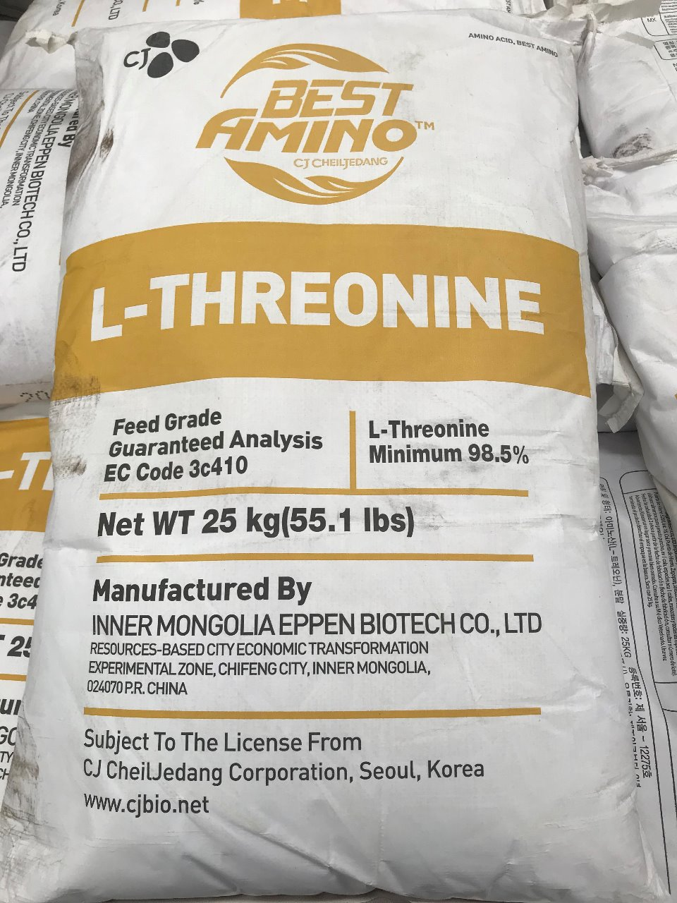
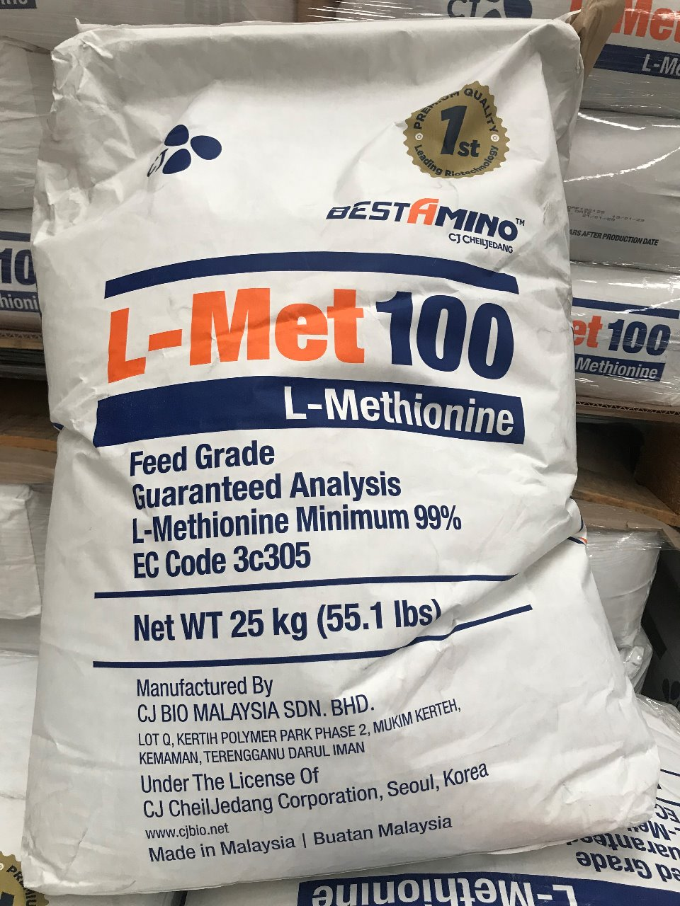

L-Lisina
Es un aminoácido esencial y limitante en la alimentación de aves, cerdos, peces y vacas lecheras.

L-Treonina
La Treonina es el segundo aminoácido limitante, en una dieta típica basada en cereales para la mayoría de las especies.

DL-Metionina
Mejora el rendimiento del pienso animal, permitiendo realizar un importante ahorro sin perder seguridad y facilidad de uso.